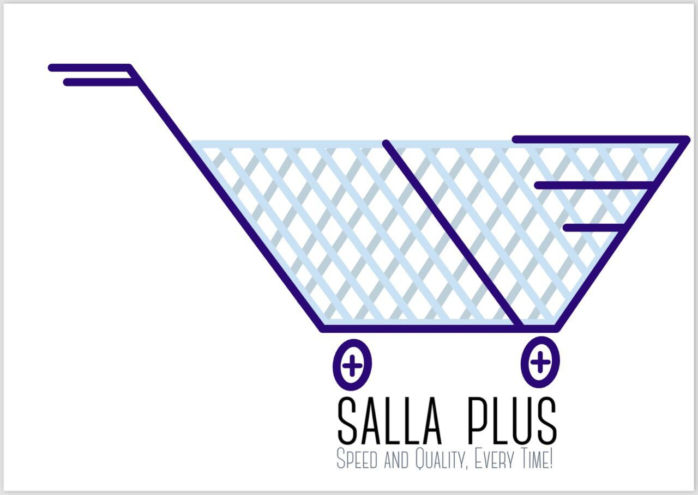
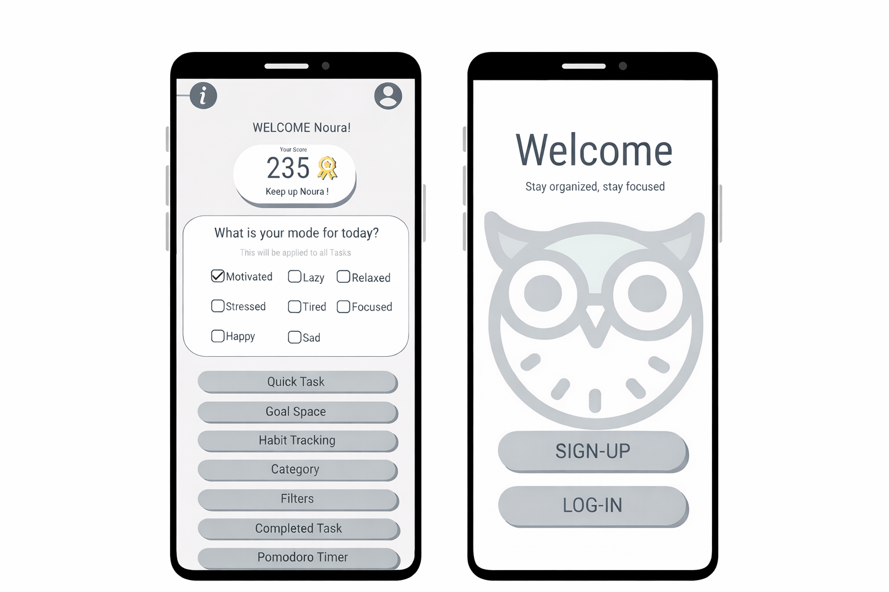
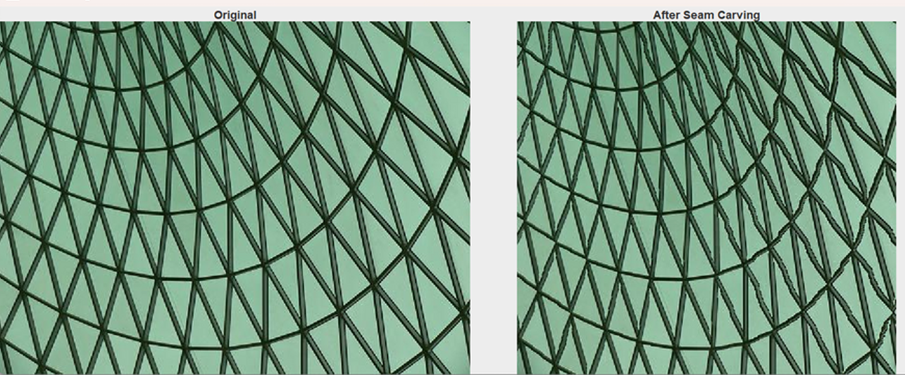
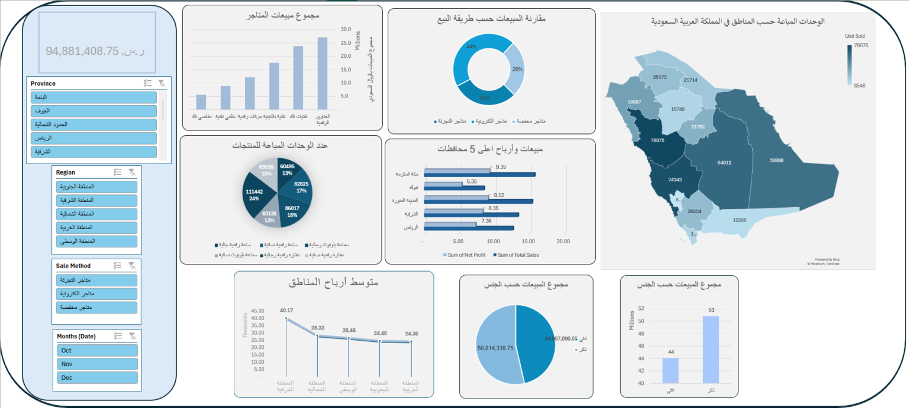
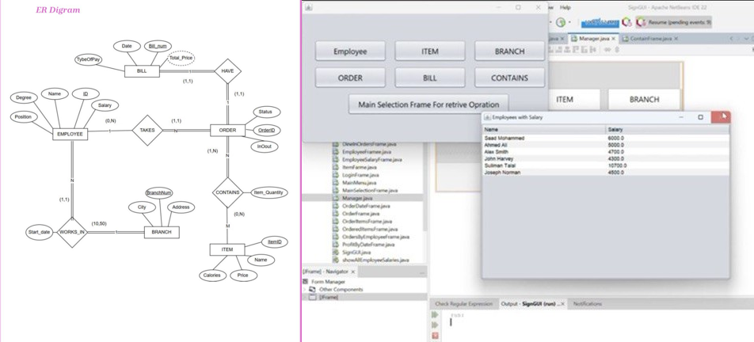
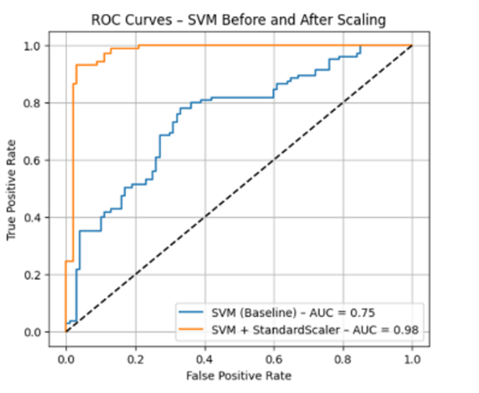
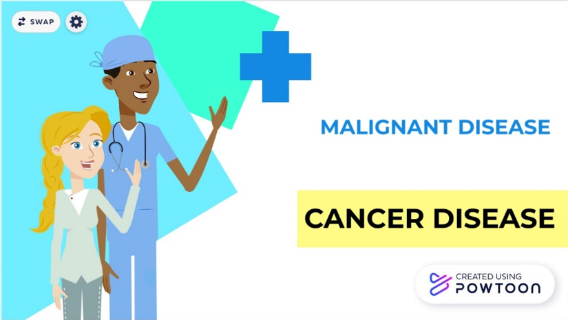

Home | CV | Projects | Contact
A mobile application designed to simplify online grocery shopping.
The app includes user authentication, product browsing, shopping cart, order tracking, and multiple payment methods with a user-friendly interface.

2025
A productivity mobile application developed to help users organize tasks and reduce procrastination.
The app includes task management, reminders, gamification features, and mood-based task filtering.

An image processing project that implements the Seam Carving algorithm. The project focuses on content-aware image resizing using different approaches including brute force, dynamic programming, and greedy algorithms.

An interactive Excel dashboard that analyzes sales performance across Saudi regions using dynamic charts and visualization.

Project link: View Excel Dashboard
A database system designed for a multi-branch restaurant, including ER modeling and SQL queries.

2024
A machine learning project for predicting heart disease using classification models and preprocessing techniques.

An educational cancer awareness video created using Powtoon to present medical information in a simple and engaging way.

2021
Back to Top